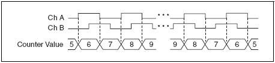
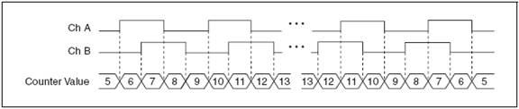

Software
The IRLL Inverted Pendulum
This is where all information on the Pendulum's software will be maintained
Change Notifications
CN CONFIGURATION AND OPERATION (Done in the setupChangeNotification function)
The CN pins are configured as follows:
- Disable CPU interrupts
- Set desired CN I/O pin as input by setting corresponding TRISx register bits = 1.
- Enable the CN Module ON bit (CNCON) = 1.
- Enable individual CN input pin(s), enable optional pull up(s) or pull down(s).
- Read corresponding PORTx registers to clear mismatch condition on CN input pins.
- Configure the CN interrupt priority bits, CNIP (IPC620:18), and subpriority bits CNIS (IPC617:16).
- Clear the CN interrupt flag bit, CNIF(IFS1) = 0.
- Enable the CN interrupt enable bit, CNIE (IEC1) = 1.
- Enable CPU interrupts.
When a CN interrupt occurs, the user should read the PORTx register associated with the CN pin(s). This will clear the mismatch condition and set up the CN logic to detect the next pin change. The current PORTx value can be compared to the PORTx read value obtained at the last CN interrupt or during initialization, and used to determine which pin changed.The CN pins have a minimum input pulse-width specification. Refer to the Electrical Characteristics chapter of the specific device data sheet to learn more.
UART Channels
The channels are configured as follows:
| Channel | Function |
|---|---|
| UART1 | Used to communicate with the controlling computer |
| UART2 | Used to send commands to the Motor Controller |
Motor Control
The user manual for the motor controller can be found at https://www.pololu.com/docs/0J44/1.3. The following table shows the commands that control the motor and their function.
| Command | Hex Value | Function |
|---|---|---|
| Safe Start | 0x83 | Clears the Controller's Safe to start bit that is set on all errors |
| Motor Forward | 0x85 | Sets the motor at the specified speed in the "forward" direction |
| Motor Reverse | 0x86 | Sets the motor at the specified speed in the "reverse" direction |
| Motor Brake | 0x92 | Brakes the motor at the specified deceleration |
| Get Variable | 0xA1 | Gets the specified variable from the motor controller |
| Set Limit | 0xA2 | Sets the max speed the motor can rotate at |
| Get Firmware Version | 0xC2 | Gets the Controller's firmware version |
| Stop Motor | 0xE0 | Stops the Motor until the motor has met Safe-Start conditions |
Encoders
X1 Encoding
The figure below shows a quadrature cycle and the resulting increments and decrements for X1 encoding. When channel A leads channel B, the increment occurs on the rising edge of channel A. When channel B leads channel A, the decrement occurs on the falling edge of channel A.

X2 Encoding
The same behavior holds for X2 encoding except the counter increments or decrements on each edge of channel A, depending on which channel leads the other. Each cycle results in two increments or decrements, as shown in the following figure.
X4 Encoding
The counter increments or decrements similarly on each edge of channels A and B for X4 encoding. Whether the counter increments or decrements depends on which channel leads the other. Each cycle results in four increments or decrements, as shown in this figure.
